Definition
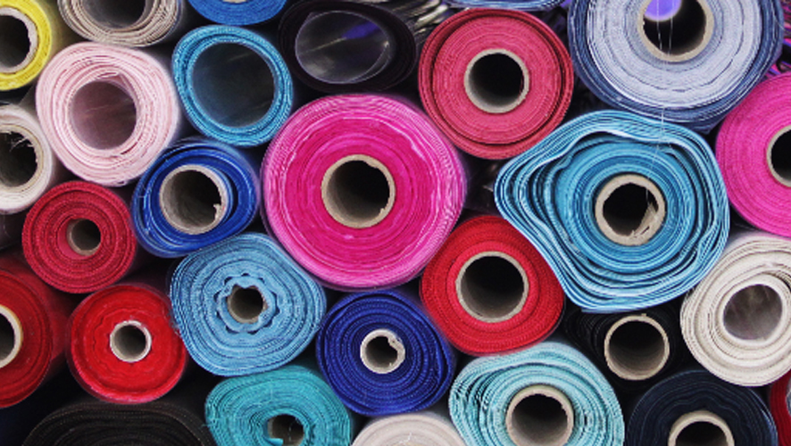
What is Polyester?
- A synthetic polymer made from Petroleum-derived
- ethylene glycol and Terephthalic Acid
- Either thermoplastics or thermosets based on their
- chemical composition and structure
- A majorly used Polyester polymer is thermoplastics.
- Defined as a long chain of polymers with a composition
- of 85% ester with dihydric alcohol and terephthalic acid.
- World’s most commonly used polymer.
Polyethylene Terephthalate (PET) is made by synthesizing pellets or chips from petroleum-based products through a process of synthesis (condensation
Polymerization) carried out using a chemical reaction which involved coal,
petroleum, air, and water
- Chips are then dried and then the hopper reservoirs are used to melt these chips.
- As it is a Melt-spun Fiber, chips are heated, extruded through the spinnerets, and cools upon hitting the air. Finally, it is loosely wound around cylinders
- Polymer material created in the process of polymerization is further extruded into long fibers that are stretched out (Drawing) to gain the original length
- Process occurs at a very high temperature in a vacuum
Supply Chain Overview
Why the polyester apparel industry is worth exploring?
- Rapid growth of the global PET industry creates large amounts of waste water and energy
- The textile industry is one of the most significant contributors to emission of GHG due to its size and scope
- It is estimated that clothing/fabrics account for 10% of total carbon emissions
- Petroleum is a nonrenewable resource
- Production of Polyester Fibers depend on crude oil, natural gas, and electricity becoming the biggest contributor to global warming potential
- Polyester used twice the amount of energy, water, GWP as cotton
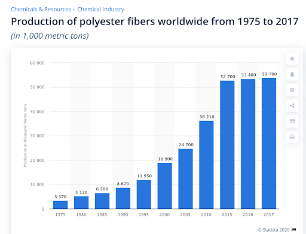
Graph 1. Production of Polyester Fibers Worldwide from 1975 to 2017 (in 1,000 metric tons)
Global Consumption of Polyester
- The global per capita consumption accounts for 6.6 Kilograms per capita.
- Asia-Pacific region has the largest contribution to the global consumption of the material. Among these regions, China and India prove to be leaders in demand of this resin material.
China and India have witnessed growth in demand for the material in recent years due to following reasons:
- Increasing industries of textiles, industrial fabrics, carpet and many others.
- Rising construction activities (Furnishing & Flooring).
- Rise in Economic growth and income level of consumers.
- Rapidly increasing population & Urbanization in these countries
Recent & Relevant News
Legal Issues & Major Controversies
- Poor conditions of worker health, safety, and wages
- Apparel factory fires in Bangladesh
- Environmental Violations and Pollution
- Ivista (2009) paid a $1.7M civil penalty and spent $500 million to correct self-reported eco violations
- Damage to reputational capital as a cynical public can shift loyalties
- Exxon lost $3B in shareholder value after Exxon Valdez Incident
- Consumer backlash against the organization - negative reputation
- Cynicism on self-regulation and lack of transparent reporting
- Greenwashing - use of corporate reports/misinformation to promote to the public the image of being sustainable
- Mismanagement of waste (chemical residue) can affect local community’s health
- Lack of investment in human sustainability capabilities leading to high turnover rate
- Technological Fixation - Orgs assume the implementation of tools (EMS/TQEM) lead to sustainable outcomes but they cannot themselves deliver strategic sustainability
Mapping the Supply Chain
These figures show Germany and the U.S. leading the world in the production of polyester across its different applications.
When it comes to polyester fibers (textile), however, production takes place predominantly in Asia, which accounts for the majority of capacity.
Mainland China leads the way, as it is also the world’s largest exporter of many polyester-made finished goods— including apparel, curtains, and bedding.
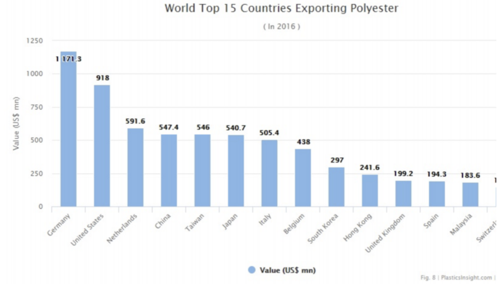
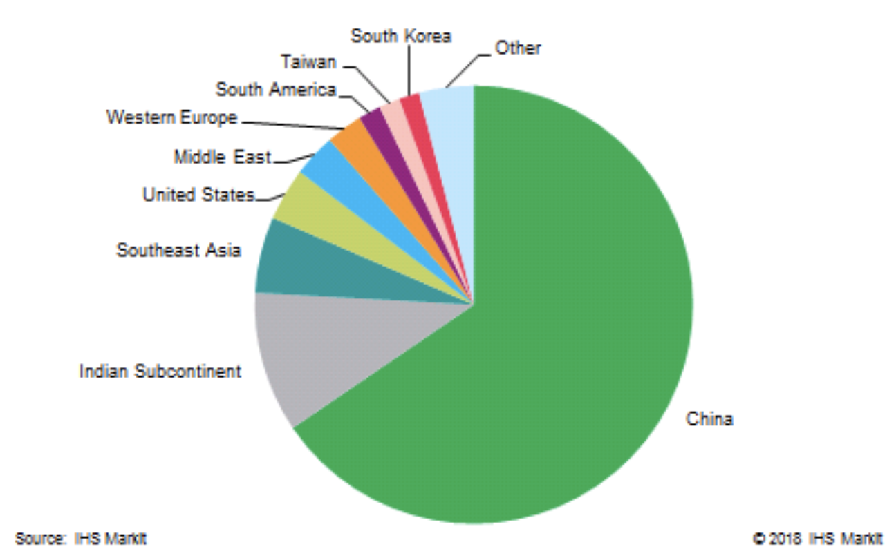
See top 15 polyester exporting countries.
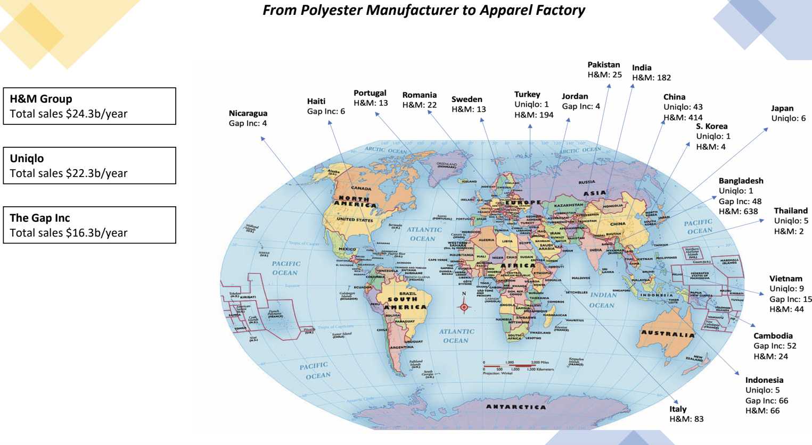
See supply chain map \"From polyester to manufacturers to apparel factory.
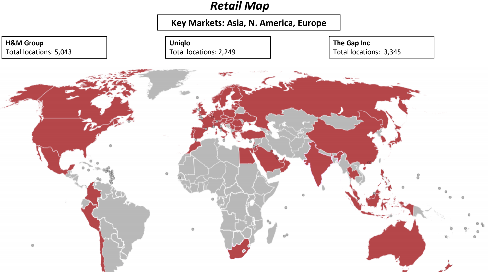
Supplier Engagement Model
Governance
Retailers and manufacturers: Code of Business Conduct and Social Responsibility
- Retailers and manufacturers of polyester have existing code of business conduct and social responsibility in place that hold them and suppliers accountable for their actions
- Considered as the “constitution” and generally covers the following:
** Compliance with laws ** Environment ** Labor ** Occupational Health Safety (OSHA) ** Management systems
- Global top brands such as GAP Inc. and UNIQLO have existing policies and even expanded to apply to its vendors, suppliers, third-party contracts
- Fair Labor Association (FLA), Action Collaboration Transformation (ACT), ILO Better Workplace are organizations that help affiliating retailers to achieve the goals of existing code of business conduct and social responsibility
The GAP Inc.
GAP’s code of conduct applies to all employees, management, vendors, and any
of its subsidiaries, divisions, affiliates or agents
- Code of Vendor conduct: Applies to all facilities that produce goods for GAP Inc.
- Code is based on internationally accepted labor standards and guidance, including International Labor Organization’s core conventions, the UN Guiding Principles for Business and Human Rights
- Provides foundation for GAP Inc.’s ongoing evaluation of a facility’s employment practices and environmental compliance
- Zero Means Zero – ”No discrimination or harassment policy”
** Providing employees with workplace where they feel respected and appreciated
- Outlines reporting and investigation process
- Health and Safety:
** Zero tolerance for workplace violence ** Drugs and alcohol policy
- Conflicts of interest
- Recording time (for employees)
Occupational Health and Safety (OSHA)
- Compliance with laws: policies concerning personal protective equipment, machine safety, chemical handling and safety, first aid, medical care, food service, emergency preparedness, fire safety, structural, and electric safety
- Health and Safety Committee: the committee shall be available in accordance with the local law
- General safety regarding risk protection
- Ventilation: adequate and ventilation should exist for the comfort of
- workers
- Lighting, floor safety, sanitation and housekeeping, stairways and raised platforms, confined spaces, seating and ergonomic mats, smoking, workers with disabilities, toilets, medical facility, and building safety
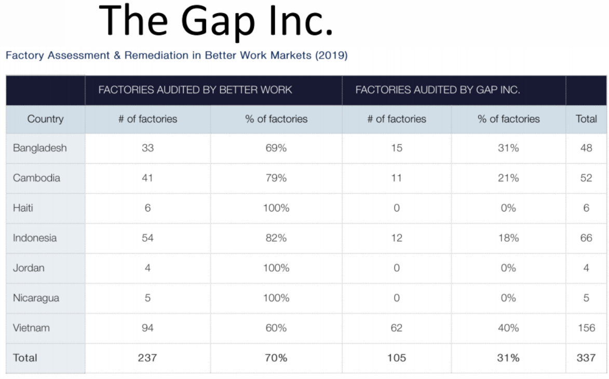
The Gap factory assessment.
GAP - Environment
- Environmental Emergency Plan (EEP) - GAP’s procedures for notifying local community authorities of accidental discharge or any other environmental emergency
- Chemical storage and disposal- facility must maintain a current chemical inventory that lists all chemicals used in the facility and the supplier’s name
- Facilities shall segregate hazardous and non-hazardous materials
- SAC Higg Index facility environment module – facility must submit module within GAP’s required timeline
- Water quality program – GAP water quality program
- Wastewater Treatment Policy and Procedure – Facilities must maintain an up-to-date wastewater treatment policies and procedures
GAP - Environmental Management
- Women + Water – improving women’s access to clean water and support women through GAP’s P.A.C.E. program (water-focused curriculum)
- Renewable energy contracts- 50% goal absolute reduction of GHG emissions at GAP’s operated facilities.
- Carbon neutral across GAP’s value chain by 2050
- Committed to divert 80% of waste from landfill (US operations) by the end of 2020
- Eliminate single-use plastics
Alpek
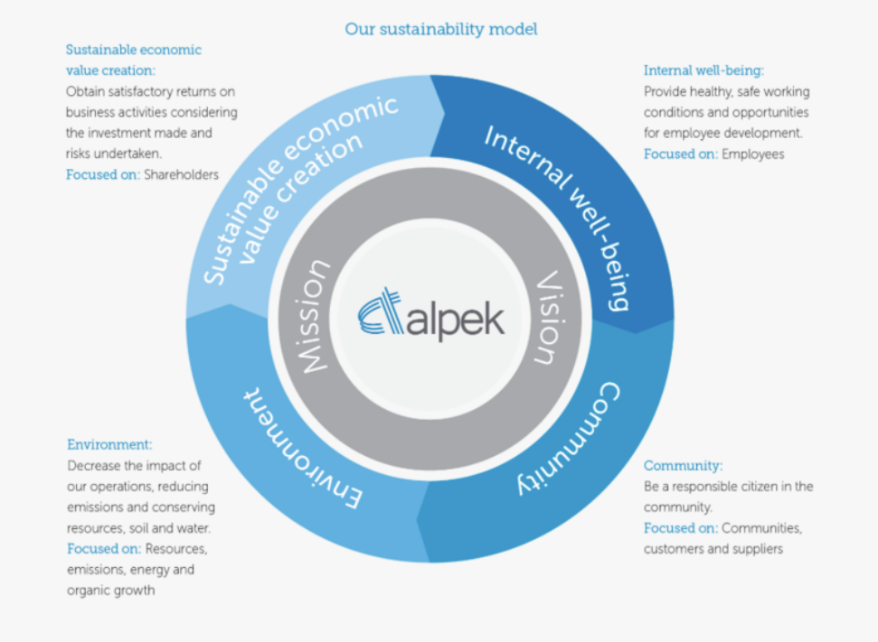
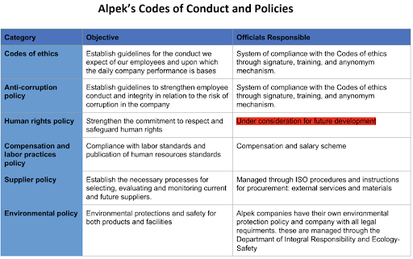
Benchmarks
Who are the main companies producing polyester?
Total annual global capacity of polyester production is estimated at 76.6 million tons. Therefore, 5 companies listed below who have disclosed their production capacity account for 49.5% of global polyester production, or 34.7 million tons !
| Alpek | Indorama Ventures | Invista | Reliance Industries Limited | Toray Industries | Rongsheng Petrochemical | |
| Location | Monterrey, Mexico | Bangkok, Thailand | Wichita, Kansas City | Mumbai, India | Tokyo, Japan | Hangzhou, China |
| Year established | 1975 | 1994 | 2003 | 1973 | 1926 | 1995 |
| Total revenue | $6.2b USD | $11.4b USD | N/A | $98.8b USD | $20.3b USD | $11.73b USD |
| Total revenue from Polyester | $4.7b USD | N/A | $270m | N/A | $8.1b USD | N/A |
| # of plants | 28 total, 16 polyester (Located in US, Mexico, Argentina, Brazil and Canada) | 120 total (33 countries) | Over 70 (22 countries) | Over 50 total | Over 15 | N/A |
| Polyester production capacity | 5.8m tons/year | 12m tons/year | 3.2m ton/year | 2.5m tons/year | 900,000 tons/year | 13.5m tons/year |
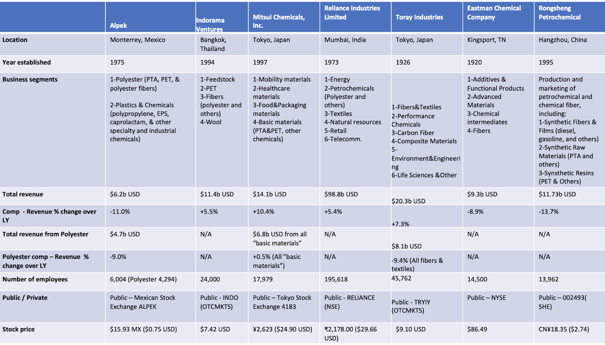
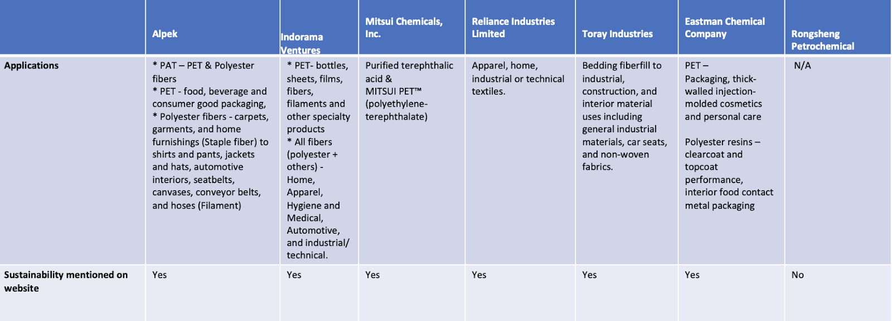
Monitoring
Verification
Alpek’s Verification Methods
- Alpek uses the Global Reporting Initiative (GRI) Methodology
- Sustainable Development Goals (SDGs) joining the international effort of reaching said goals established by the United Nations in the Paris Agreement in 2015.
Reporting
Alpek’s Reporting methods and findings
- Annual sustainability reporting (through GRI)
- Integrity and Transparency Helpline, which operates 24 hours a day, 365 days a year, and which is also used to identify cases of money laundering and corruption. In addition to internal mechanisms, Alpek also leverages external consulting services from specialized firms in legal, labor, environmental and social responsibility practices.
- In 2019, Alpek addressed a total of 82 cases of non-compliance or violation of these policies, and 14 people left the company as a result.None of the cases were related to the involvement of employees with government authorities, and none involved cancellations or non-renewed contracts with business partners for reasons attributable to non-compliance with Alpek policies and values. There were also no cases in which Alpek was reported for matters dealing with corruption.
Life Cycle Assessments
Life Cycle of a Conventional Polyester Shirt
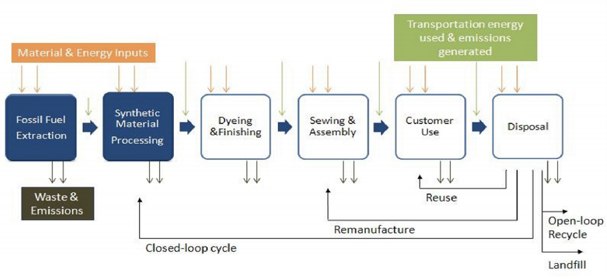
1. Long string of operations that produces waste and consumes water
2. Indirectly generated pollutants through energy and directly creates pollutants
through use of cleaning chemicals in the washing process
3. Life Cycle Assessment for a Polyester Shirt can be divided into three main phases:
Production, Use (washing), and End of life (disposal)
Production of Polyester - 8 Steps Polymerization
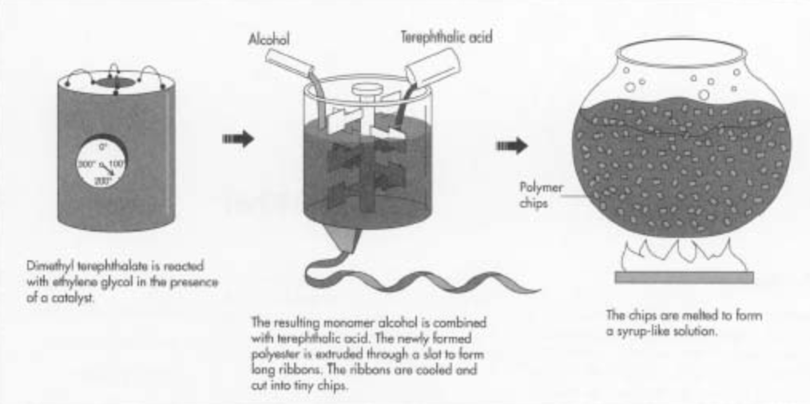
1. Dimethyl Terephthalate is first reacted with ethylene glycol along with a catalyst at a temp of 150-210°C
2. The resulting chemical is then combined with alcohol and terephthalic acid at 280°C to create a new formed polyester and then extruded through a slot to form long ribbons (clear and molten form)
Drying
3. The long molten ribbons are then cooled until brittle. The material is then chopped into tiny chips and completely dried
Melt Spinning
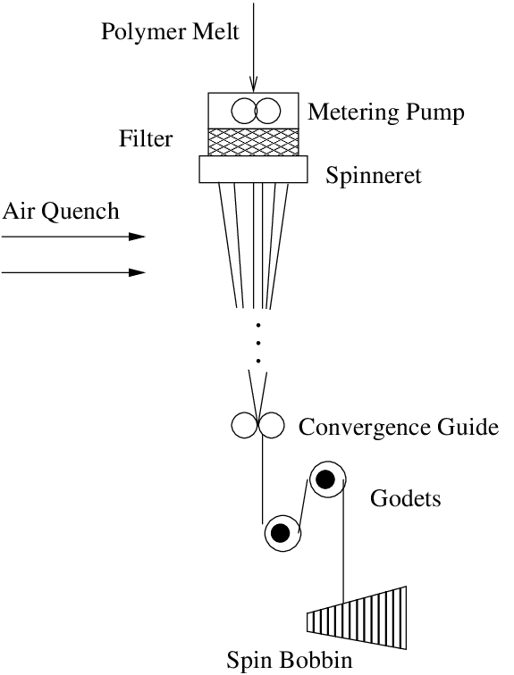
4. Polymer chips are melted to have a syrup-like consistency. Then put through a spinneret and forced through small holes to be brought together to form a single strand
5. At the spinning stage, other chemicals can be added for per customer request. IE: flame resistant, antistatic, easier to dye, etc.
Drawing the Fiber
6. Coming from the spinneret, the polyester is soft and easily stretched up to 5x its original length. Stretching forces the molecules to align in parallel increasing strength and durability.
7. Drawn fibers vary greatly in diameter and length depending on finished good. Fibers can also be textured or twisted to create softer or duller fabrics
Winding
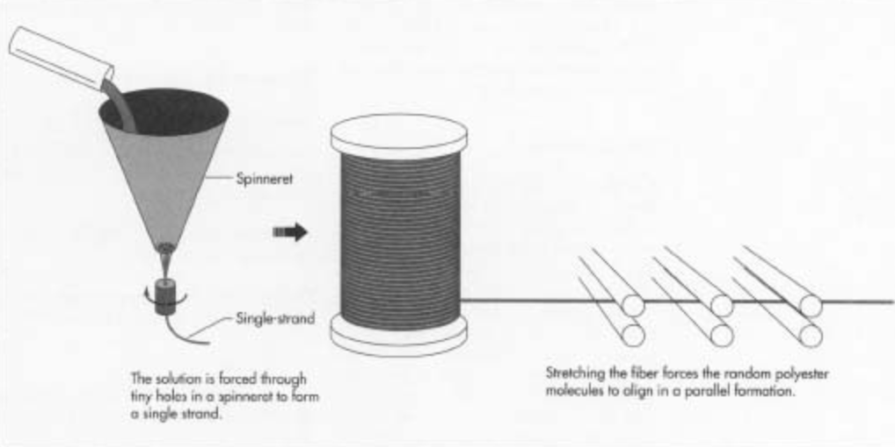
8. After the polyester yarn is drawn, it is wound on large bobbins and ready to be woven into material
Distribution & Use Phase
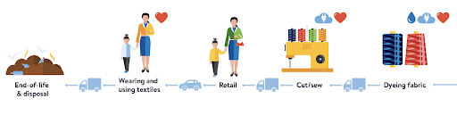
- Weaving - After the yarns are made they are shipped out to textile mills to be woven into fabrics Polyester can be made into both woven and knitted fabrics
- Use (Washing) - Within two years (average life span) a shirt can be estimated to be laundered 52 times throughout its entire usage. Cleaned shirts are dried in tunnel dryer and potentially can be individually steam pressed.
Disposal Phase
A shirt is retired from use once it is no longer presentable for the consumer to wear and can be recycled, donated, or disposed of.
Recycling - to recycle a polyester shirt it will first be shredded completely. Then the fibers/threads will be gathered. Then put back through the manufacturing process to be winded or spin again
An incredible 85% of America's used clothes goes to landfills. Only 15% is recycled or donated - via the Council for Textile Recycling
Not biodegradable meaning that the polyester shirt will not decompose for 20 to 200 years.
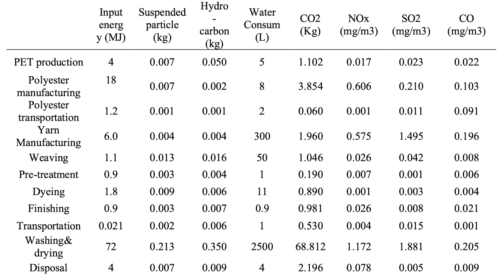
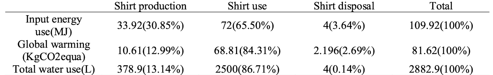
*Unit Selection is 100% Polyester Shirt (0.15 kg) - shows life cycle energy consumption, GWP, and water consumption*
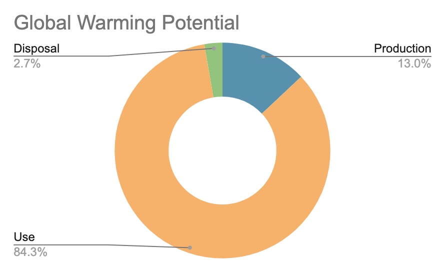
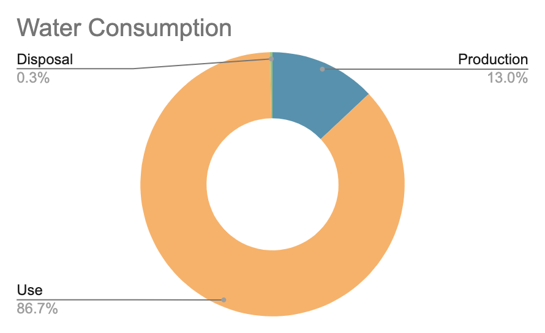
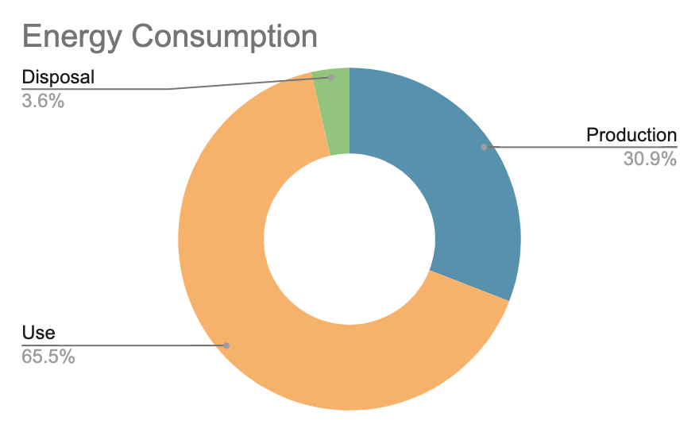
Other Challenges & Impacts
Risk & Liability
If the polyester problem continues to go on unaddressed...
- Poor conditions of worker health, safety, and wages
** Apparel factory fires in Bangladesh
- Environmental Violations and Pollution
** Ivista (2009) paid a $1.7M civil penalty and spent $500 million to correct self-reported eco violations
- Damage to reputation as a cynical public can shift loyalties
** Exxon lost $3B in shareholder value after Valdez Incident
- Cynicism on self-regulation and lack of transparent reporting
- Greenwashing - use of corporate reports/misinformation to promote to the public the image of being sustainable
- Mismanagement of chemical waste can affect local community’s health
| Energy Consumption | Global Warming Potential | Water Consumption | |
| Production Phase | 30.9% | 13% | 13% |
| Use Phase | 65.5% | 84.3% | 86.7% |
| Disposal Phase | 3.6% | 2.7% | 0.3% |
Use and Disposal consumes a total of 109.9 MJ of energy. Resulting in GWP of 81.62 CO2 (equivalent to burning 1 gallon of propane) and 2882.9 L of water
Innovations
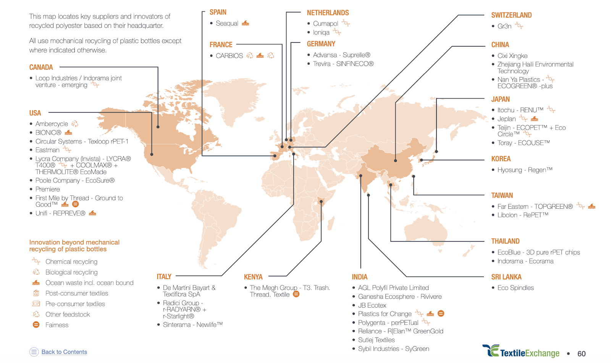
Recycled Polyester
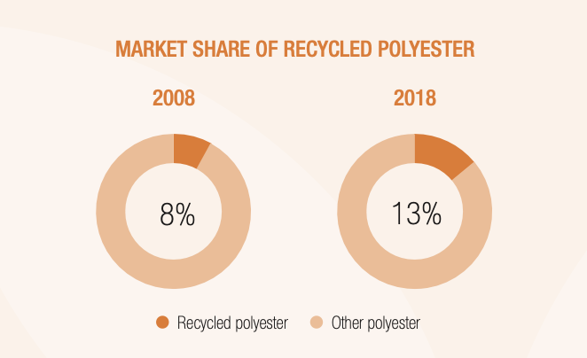
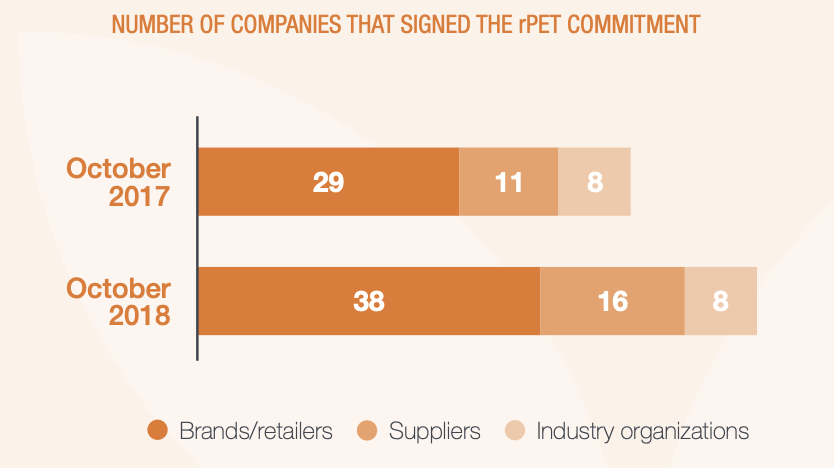
Recycled Polyester: PROS
- Takes less resources to make: its production requires 59 percent less energy compared to virgin polyester
- rPET’s production to reduce CO2 emissions by 32 percent in comparison to regular polyester
- Using recycled polyester lessens our dependence on petroleum as a source of raw materials
- Keeping plastics from going to landfill and the ocean: 8 million metric tons of plastic enter the ocean every year, on top of the
- estimated 150 million metric tons that currently circulate in marine environment
- Lessens dependence on petroleum resulting to lower greenhouse gas emissions and use of chemicals
Recycled Polyester: CONS
- Clothes that are 100% PET cannot be recycled forever
- Process still requires more energy than hemp, wool and both organic and regular cotton
- The chips generated by mechanical recycling can vary in color and as a result, some use chlorine-based bleaches to whiten base
- rPET releases microplastics: Microfibers made up 85 percent of human-made debris on shorelines around the world. It doesn’t matter if garments are from virgin or recycled polyester, they both contribute to microplastics pollution
REPREVE is the leading, most trusted, branded performance fiber made from recycled materials (including plastic bottles).
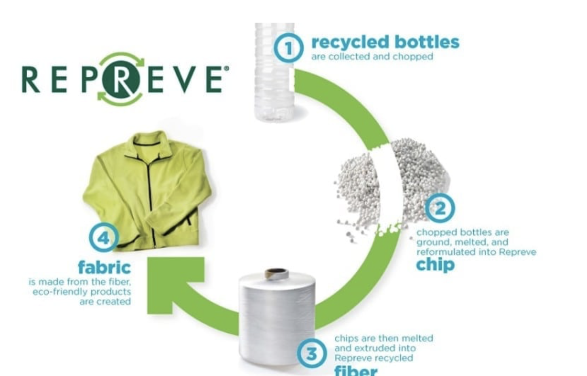
Patagonia - Free repair services at retailer level
Message from Patagonia CEO, Rose Marcario: “This holiday season, I have an early New Year’s resolution for the sake of Planet Earth: let’s all become radical environmentalists. This sounds like a big leap—but it’s not. All you need is a sewing kit and a set of repair instructions. As individual consumers, the single best thing we can do for the planet is to keep our stuff in use longer. This simple act of extending the life of our garments through proper care and repair reduces the need to buy more over time—thereby avoiding the CO2 emissions, waste output and water usage required to build it.”
H&M - Recycling services at retailer level
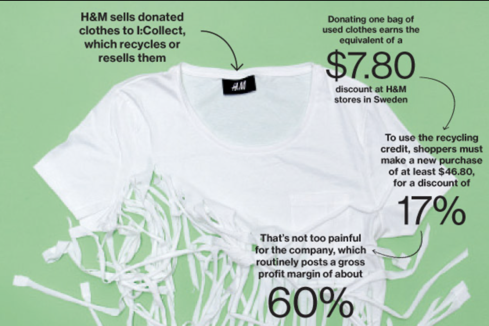
Alternative Materials
- Bio-based versions: terephthalic acid (PTA) and monoethylene glycol (MEG) can be madefrom natural resources although more expensive
- Lyocell- made from the wood pulp of the eucalyptus tree. The fiber is produced with minimal impact on the environment – using a non-toxic solvent that is continually recycled during the production process – and economical use of energy and water
** Eucalyptus also requires fewer pesticides and far less acreage to grow than cotton, thus it is much more eco-friendly
- Flax: Flax fibers come from the flax plant and are usually used to make linen, which is known to be one of the world’s strongest and most durable natural fibers. The bast fiber is one of the oldest agricultural crops in the world and is naturally pest-resistant
** It also requires very little fertilization and chemicals to thrive, and little to no irrigation
Alternative Materials
- Tencel: a natural fiber known for its flattering drape and soft, luxurious hand-fee
- Hemp: Grown without the use of harmful chemicals, pesticides, herbicides or fertilizers
** It is also a high-yield crop that grows very rapidly and with little irrigation (50% less than cotton), making it a very appealing and “clean” option for designers. Other benefits of hemp: tensile strength and durability (8x that of cotton), hypoallergenic, breathable, and UV resistant
- Fish Leather: made from the skin of different fish species, such as salmon, perch and carp
** The tanning process of fish skins uses far less chemicals than that of other animal skins, eliminating things like lye and acid that cause atmospheric pollution ** They are very durable and their texture depends on the size and shape of the scale pockets, which can vary from 2mm to 2cm in size according to the species
Conclusions
The textile industry is one of the most significant contributors to emission of GHG due to its size and scope. Estimated as 10% of global carbon emissions.
An incredible 85% of America's used clothes goes to landfills. Only 15% is recycled or donated - via the Council for Textile Recycling.
Results from LCA show that the use-phase of a shirt generally causes the most damage to the environment. Consuming more energy and water than either shirt creation or disposal phases.
Encouraging that companies are exploring alternative materials, however it is on us as the consumer to create the demand for these type of products.
Your individual actions CAN make a difference! Air dry clothes, use special laundry bags, maximize load size, and limit detergent/softener.
Become more conscientious of your purchasing choices and ask questions!
Individual Actions: Laundry
- Laundry: washing and drying, the use phase, stands for 65.5% of energy consumption, 84.3% of global warming potential, and 86.7% of water consumption.
- What can you do? Changing the baseline by 10°F (from 94°F) will result in a 14% reduction of energy consumption, while a cold wash eliminates the need for heating the water and reduce energy consumption by 60%. Use the ECO setting on your washing machine.
- Always fill the machine
- Avoid tumble drying - hang dry your clothes.
- No fabric softener
- Go easy on the detergent
- Wear your clothes more than once.
- Avoid mixing materials: don’t wash synthetics, wool and cotton together.
Individual Actions: Washing bags
- Laundry: Microplastic pollution caused by washing processes of synthetic textiles has recently been assessed as the main source of primary microplastics in the oceans. Microfibers are plastics that are too small to be sorted out properly in the sewage plant.
- What can you do? Use a special washing bag. These bags will capture any microfibers and prevent them from entering the ocean. Clean out the bag and recycle the captured fibers with other plastics.
- The washing bags also protects your clothes from excess wear and will make them last longer.
Recommendations for Polyester Supply Chain Participants
- Keep raw material sourcing, treatment, production all in the same region to combat transportation cost & GHG emissions
- Transition towards socio- and eco-centric values/ideals
- Shift towards Sustainable fashion
- Transition towards ‘slow fashion’ approach - removal of ‘seasons’
- On Demand/Custom Made
- High Quality & Emotional Designed Products
- Repair & Upcycling Services
- Annual Reporting has to be transparent, consistent, and accurate
- Invest in Human Sustainability - Developing the intellectual and social capital of the org’s workforce
- Explore international co-operations between governments, corporations, and
- environmental groups
- Empower local communities by keeping the value chain local
Sources and References
- https://textileexchange.org/wp-content/uploads/2019/11/Textile-Exchange_Preferred-Fiber-Material-Market-Report_2019.pdf
- https://sewport.com/fabrics-directory/polyester-fabric
- http://www.madehow.com/Volume-2/Polyester.html
- https://www.iknockfashion.com/is-polyester-fabric-industry-fruitful-or-futile
- https://www.iknockfashion.com/will-covid-19-draw-attention-to-sustainable-fashion
- https://blog.technavio.com/blog/top-10-largest-polyester-manufacturers
- https://www.fibre2fashion.com/industry-article/3/comparison-of-polyester-industries-in-china-and-india
- https://www.woodguide.org/files/2014/07/LCA-textiles.pdf
- https://www.investopedia.com/articles/markets/051416/nike-stock-analyzing-5-key-suppliers-nke.asp#citation-11
- https://fashionunited.uk/news/fashion/how-sustainable-is-recycled-polyester/2018111540000
- https://www.the-sustainable-fashion-collective.com/2015/01/29/what-is-recycled-polyester
- http://www.ecofashiontalk.com/2016/07/4-eco-friendly-alternatives-to-commonly-used-textiles/
- https://goodonyou.eco/material-guide-polyester-2/
- https://ellaclothing.files.wordpress.com/2013/06/lcaofapolyestergarment.pdf
- https://www.oceancleanwash.org
- https://www2.hm.com/en_us/hm-sustainability/take-care.html/keep-microfibers-out-of-the-ocean-6
- Global Market Insights, “Industry Trends,” accessed at: https://www.gminsights.com/industry-analysis/polyester-fiber-market
- Grand View Research, “Industry Insights,” accessed online at: https://www.grandviewresearch.com/industry-analysis/polyester-staple-fiber-psf-market
- Plastic Insight, “Polyester Properties, Production, Price, Market and Uses,” accessed online at: https://www.plasticsinsight.com/resin-intelligence/resin-prices/polyester/
- Wicker, Alden (2016), “Why, Exactly, Is Polyester So Bad for the Environment?” accessed at: https://ecocult.com/exactly-polyester-bad-environment/
- http://www.alpek.com/awards-certifications.html
- http://www.alpek.com/gri-report.html
- http://www.alpek.com/pdf/2020/GRI-Index-Alpek-2019-Eng.pdf
- https://bombaydyeing.com/pdfs/financial_updates/Annual%20Report%202018-19.pdf
- https://bloncampus.thehindubusinessline.com/columns/brand-basics/bombay-dyeing-weaving-every-thread-into-a-grand-tapestry/article32415936.ece
- https://bombaydyeing.com/pdfs/financial_updates/Annual-Report-2019-20.pdf
- https://sustainability.indoramaventures.com/storage/content/sustainability-report/en/executive-summary-2019/doc.pdf
- https://sustainability.indoramaventures.com/en/downloads/sustainability-reports
- https://hub.optiwise.io/en/documents/2491/ivl-ar2018-en-02.pdf
- https://www.indoramaventures.com/en/investor-relations/downloads/annual-report
- https://www.indoramaventures.com/en/worldwide?country_id=&family_id=50
- https://blog.technavio.com/blog/top-10-largest-polyester-manufacturers
- https://www.patagonia.com/our-footprint/working-with-factories.html
- https://repreve.com/brands/patagonia
- https://about.bestseller.com/media/3131/bestseller_sustainability_report_2019.pdf
- https://www.esprit.com/en/company/sustainability/produce-responsibly/transparent-supply-chain
- https://www.esprit.com/press/sustainabilityreport/GRI201516.pdf